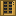

Placing a hundred Solar Arrays by hand is a job for drones. Mark out a site with a Survey Stake, hand it to a Site Planner on your grid, choose a Solar Field, a Wind Farm or a Data Hall, and press Start. The work always goes in the same order: Construction Drones clear everything soft off the site, Terraforming Drones level it (five blocks a trip) and dock once it is even, then Construction Drones build the layout and wire it back to the planner. Materials, drones and hydrogen come from the planner's slots or from storage on its Item Pipe, and its screen says what it is waiting for. A Storage Exporter beside it can stock it from storage instead, and with Buy switched on it pays for cable and fill earth at the Crypto Exchange. Arrays, tower parts and drones always come from your own Assembly Line. With Docks switched on, a fifth phase places and stocks Drone Docks to service the finished site. A Data Hall is the densest, coolest rack layout there is, bought on the company card: columns of four Quantum Core racks in two tiers, back to back on CDUs that catch all their exhaust, with cold aisles between row pairs, Core Routers and Chillers on top, and no cables at all. Each column mines 1,920 RC/s on about 360 kW, so check the planner's power estimate against your grid first.
Survey Stake
rackcraft:survey_stake
A stick with a flag on it, for telling a Site Planner where to build. Use it on the ground at one corner of the site and then at the opposite corner; while you hold it the site is outlined. Use it on a Site Planner to hand the site over. Sneak-use to start again.
Crafting
Orange wool
Stick
Stick
Site Planner
rackcraft:site_planner
Builds whole power plants while you do something else. Mark a site with a Survey Stake (up to 48 x 48, within 96 blocks), use the stake on the planner, pick a layout (Solar Field, Wind Farm, Data Hall or Reactor Cube) and press Start. Construction Drones clear the site first: grass, flowers, snow, leaves and entire trees go into storage. Terraforming Drones then level it to its median height, five blocks a trip, and dock once it is even. Then the Construction Drones build: arrays packed edge to edge, or Wind Towers six blocks apart with their nacelles at Y 130. Last, they lay Power Cable between the towers and back to the planner, so put the planner on the grid you want the site on. The Reactor Cube layout builds solid cubes of Modular Reactors, a layer at a time, a block of air between cubes: press the Cube button to pick 2 x 2 x 2 up to 10 x 10 x 10 (as big as your Reactor Array research and the site allow). The Exchange sells the reactors, at machine prices, so the bill gets large. Slots: Construction Drones, Terraforming Drones, Hydrogen Canisters, then six for materials; on an Item Pipe it takes all of these from storage too. Switch on Docks and, once the site is built, it places as few Drone Docks as cover every array and tower (from storage, or bought at the Exchange), stocks them with Maintenance Drones and hydrogen from storage, and keeps them topped up. Switch on Buy and it pays for anything else it is short of (cable, fill) at the Crypto Exchange's prices; the Exchange doesn't sell arrays, tower parts, drones or hydrogen. Before the drones buy anything, the planner works out the whole bill and tells you item by item, once per job: nothing is bought until you press Approve. Every purchase is then written to a ledger that a Procurement Wall on the same grid will show you. Each trip burns a sixteenth of a canister. Draws 5 kW. Inside the site it moves anything without a block entity, so don't mark out your house; outside it, the cable only digs through earth and rock.
Crafting
Map
Cartography table

Procurement Wall
rackcraft:procurement_wall
A Monitoring Wall that has been to business school. Plug it into the same power grid as your Site Planners and it keeps their books: every purchase their drones make at the Crypto Exchange, itemised (what, how many, what each cost, what part of the job it was for, how long ago), with running totals per planner. It also shows a planner's price quote, and a button to approve it without walking over to the planner. Switch on its HUD and a live ledger of the latest purchases sits on your screen whenever you are within 48 blocks of a powered wall. Draws 0.5 kW.
Crafting
Gold ingot
Gold ingot
Heavy Drone Frame
rackcraft:heavy_drone_frame
A bigger airframe for drones that lift things. What it becomes depends on the first part an Assembly Robot fits: two Sticky Pistons make a Construction Drone, a Diamond Shovel a Terraforming Drone. Either way it then gets four Electric Motors, two Circuit Boards, a weld and rivets.
Crafting
Construction Drone
rackcraft:construction_drone
A heavy-lift quadcopter in hazard stripes. Load it into a Site Planner and it clears sites, places Solar Arrays and Wind Towers, and lays cable, carrying its materials out from storage and bringing back whatever it cleared. Built on the Assembly Line from a Heavy Drone Frame.
A quadcopter with a scoop. Load it into a Site Planner and it levels the site: it digs up to five blocks off the high spots each trip and drops them into the low ones, takes spare earth home to storage, and brings dirt or cobblestone from storage when there is more hole than hill. When the ground is even it docks and waits. Built on the Assembly Line from a Heavy Drone Frame.
A steel pallet with corner posts, for packing a whole Data Hall column. Put it on an Assembly Line: the racks an Assembly Robot fits first decide the skid (Server Racks, High-Density Racks, Immersion Racks or Exascale Cabinets), then come two CDUs, a weld, the Chillers and Core Routers, and rivets.
Crafting
Server Rack Column Skid
rackcraft:server_rack_skid
A Data Hall column packed on a pallet: four Server Racks two high, two CDUs between them, Chillers over the CDUs and Core Routers over the racks (its tooltip says how many), all from your own parts on the Assembly Line, so nothing is bought and no drone flies. Use it on the ground and it unfolds away from you: the near racks face you and the far ones face away, so skids set side by side make a hall row with a cold aisle in front and behind. Everything touches, so power, coolant and fiber need no cables between them. The racks come empty: fill them with modules from storage with Fill bays on the Operations Terminal. It needs a clear space one block wide, three deep and as tall as the stack.
A Data Hall column packed on a pallet: four High-Density Racks two high, two CDUs between them, Chillers over the CDUs and Core Routers over the racks (its tooltip says how many), all from your own parts on the Assembly Line, so nothing is bought and no drone flies. Use it on the ground and it unfolds away from you: the near racks face you and the far ones face away, so skids set side by side make a hall row with a cold aisle in front and behind. Everything touches, so power, coolant and fiber need no cables between them. The racks come empty: fill them with modules from storage with Fill bays on the Operations Terminal. Arms pack it once Dense Racks is researched. It needs a clear space one block wide, three deep and as tall as the stack.
A Data Hall column packed on a pallet: four Immersion Racks two high, two CDUs between them, Chillers over the CDUs and Core Routers over the racks (its tooltip says how many), all from your own parts on the Assembly Line, so nothing is bought and no drone flies. Use it on the ground and it unfolds away from you: the near racks face you and the far ones face away, so skids set side by side make a hall row with a cold aisle in front and behind. Everything touches, so power, coolant and fiber need no cables between them. The racks come empty: fill them with modules from storage with Fill bays on the Operations Terminal. Arms pack it once Immersion Cooling is researched. It needs a clear space one block wide, three deep and as tall as the stack.
A Data Hall column packed on a pallet: four Exascale Cabinets two high, two CDUs between them, Chillers over the CDUs and Core Routers over the racks (its tooltip says how many), all from your own parts on the Assembly Line, so nothing is bought and no drone flies. Use it on the ground and it unfolds away from you: the near racks face you and the far ones face away, so skids set side by side make a hall row with a cold aisle in front and behind. Everything touches, so power, coolant and fiber need no cables between them. The racks come empty: fill them with modules from storage with Fill bays on the Operations Terminal. Arms pack it once Exascale is researched. It needs a clear space one block wide, three deep and as tall as the stack.
A welding jig on a pallet, for building a Superb Warfare vehicle on an Assembly Line. Right-click the air to pick which vehicle (sneak to go back), then put it on a Conveyor Belt and it sits on the line as a see-through outline of the real thing. Robots beside the belt, facing it from up to three blocks away so they clear the hull, build it up in the order a real plant would: the hull from steel, then tracks or wheels, then the motor and battery packs, then the armament, the outline filling in as each part goes on. Off the end of the line it drives away as the finished vehicle. Punch it to take it off the line, progress and all. Needs Prime Brokerage, and Superb Warfare installed.